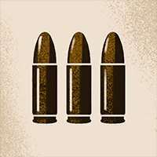
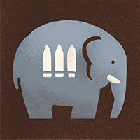
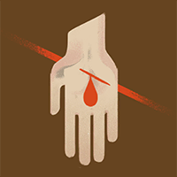
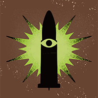
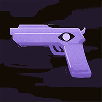
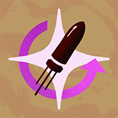

Helden › Schütze
Venator
Venator ist ein spielbarer Held in Deadlock. Die Venatoren des heiligen Benedikt beobachten, identifizieren, exterminieren. Und selbst unter dem „Schwert des heiligen Benedikt“ sticht dieser eine Mann hervor — man hat ihn erneut nach New York entsandt.
Hintergrund
Die Venatoren des heiligen Benedikt sind ein vom Vatikan sanktionierter Orden, dessen Mitglieder in Regionen mit hoher Dichte übernatürlicher Raubwesen entsandt werden. Ihre Zahl ist klein, ihr Vorgehen stets gleich: beobachten, identifizieren, exterminieren. Sie sind methodisch, sie sind präzise — und haben sie eine Bedrohung für die Herde erst identifiziert, sind sie unerbittlich.
Doch selbst unter jenen, die man „Das Schwert des heiligen Benedikt“ nennt, steht einer für sich: ein Mann, dessen verhärtetes Herz ihn schreckliche Preise im Namen des höheren Wohls zahlen ließ … und der nun erneut nach New York entsandt wurde.
Spielstil
Venator kämpft wie ein Exorzist mit Arsenal: Weihgranaten setzen Gegner in Brand und unterbinden ihre Heilung, seine Fallen stellen Flüchtende — und Ira Domini vollstreckt das Urteil mit drei gesegneten Pfählen.
Fähigkeiten
Consecrating Grenade
Taste 1Springende Granate: Waffenschaden, setzt Gegner in Brand — Brennende erleiden reduzierte Heilung und verstrahlen reinen Schaden.
Abklingzeit: 25 s
Gutshot
Taste 2Schrotstoß, der Waffenschaden verursacht und Gegner zurückwirft — an der Wand gibt es Betäubung und Bonus-Schaden.
Abklingzeit: 23 s
Hex-Lined Snap Trap
Taste 3Tritt eine Falle los, die beim ersten Opfer zuschnappt: Geist-Schaden, Festhalten und Aufdeckung umliegender Gegner.
Abklingzeit: 28 s
Ira Domini
Taste 4 UltimateLädt die Armbrust mit drei Pfählen mit massiv erhöhtem Waffenschaden — der letzte, gesegnete richtet angeschlagene Gegner hin.
Abklingzeit: 160 s
Basiswerte
| Wert | Basis (Stufe 1) | Kategorie |
|---|---|---|
| Maximale Gesundheit | 820 | Vitalität |
| Gesundheitsregeneration | 2 / s | Vitalität |
| Lauftempo | 6,4 m/s | Bewegung |
| Sprint-Bonus | +1,5 m/s | Bewegung |
| Ausdauer | 3 | Bewegung |
| Leichter Nahkampfschaden | 50 | Waffe |
| Schwerer Nahkampfschaden | 125 | Waffe |
Beliebte Builds
Diese Daten stammen direkt aus dem Build-Browser im Spiel: die drei meistfavorisierten Builds für Venator, sortiert nach der Zahl der Spieler, die sie gespeichert haben. Klick einen Build an, um die Item-Reihenfolge zu sehen.
№1 TOP 1 PRIEST NA - SHMUCK 41.429 Favoriten
„This build will have people asking: "Do you think you're the devil himself?" No, but you do have a good mirror... discord: discord: https://discord.gg/KVHpb94rUJ join“


















№2 TOP 1 PRIEST NA - SHMUCK 41.296 Favoriten
„This build will have people asking: "Do you think you're the devil himself?" No, but you do have a good mirror... discord: discord: https://discord.gg/KVHpb94rUJ join“
№3 TOP 1 PRIEST NA - SHMUCK 41.076 Favoriten
„This build will have people asking: "Do you think you're the devil himself?" No, but you do have a good mirror... discord: discord: https://discord.gg/KVHpb94rUJ join“

Warum sind das die besten Builds?
Die drei Builds wurden zusammen über 123.801-mal von Spielern gespeichert — Favoriten sind das stärkste Qualitätssignal im Build-Browser, denn ein Build, den so viele Spieler über Monate und Patches hinweg behalten, hat sich in echten Matches bewährt. Auffällig ist der hohe Anteil an Vitalitäts-Items: Venator steht mitten im Gefecht — jede Sekunde, die der Held länger lebt, ist gewonnener Schaden und Raum fürs Team. Als Einstieg gilt: Folge der Item-Reihenfolge des №1-Builds Kategorie für Kategorie und passe erst mit wachsender Erfahrung an dein Matchup an.
Trivia
- Venators interner Klassenname in den Spieldaten lautet
hero_priest. - Die Spieldaten führen den Helden mit den Tags Devout, Arms Expert, Tactical.
- Die Einstiegskomplexität liegt bei 2 von 3 — Kategorie „Fortgeschritten“.